Line, Area, Bar and Pie, now drawn by ECharts
As you decided on 2026-10-26: the first four charts, built for real in the Platform's code, shown before anything ships. Each picture puts today's chart (left) next to the new one (right) with the same settings and the same made-up St. John the Beloved numbers. Approve each chart on its own.
In short: all four look like today's, with every label fitting. Bar and Pie gain the keyboard (one Tab stop and the arrow keys) and the screen reader's live region, which only Line and Area had. One rule needs your word before shipping: ECharts writes sizes and fonts onto its own drawing (decision 2 below). Open the live preview to try every chart.
LineChart
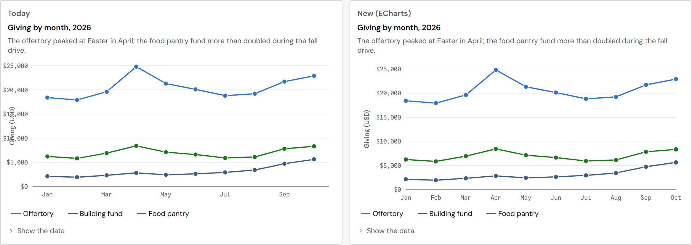
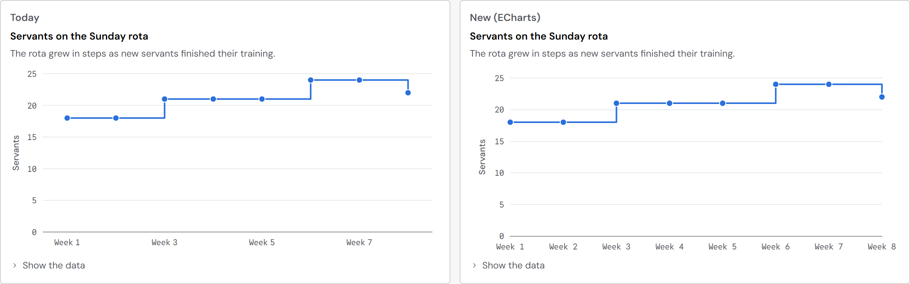
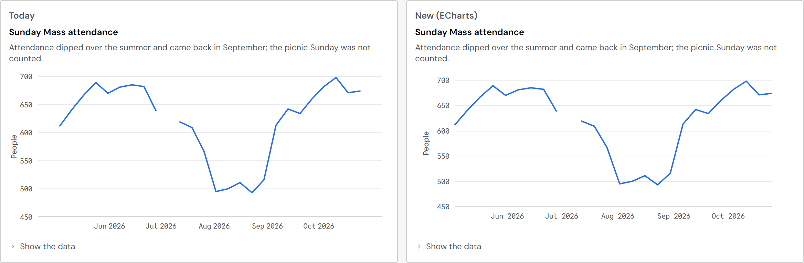
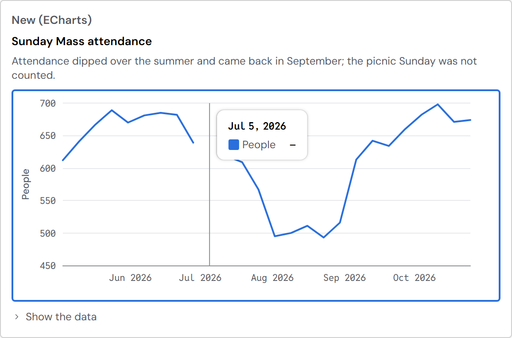
AreaChart
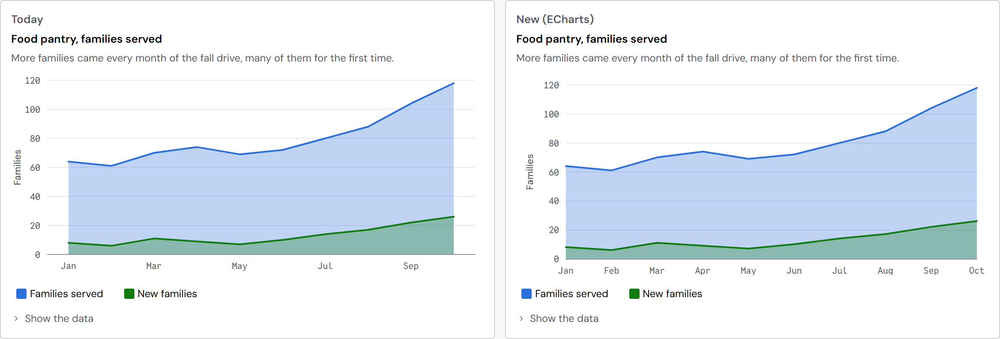
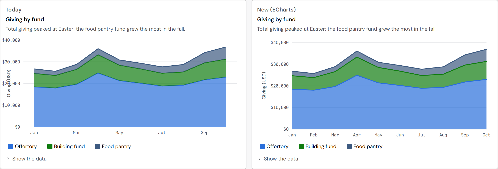
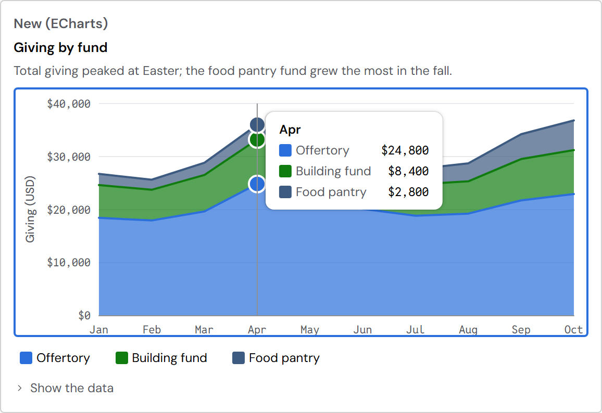
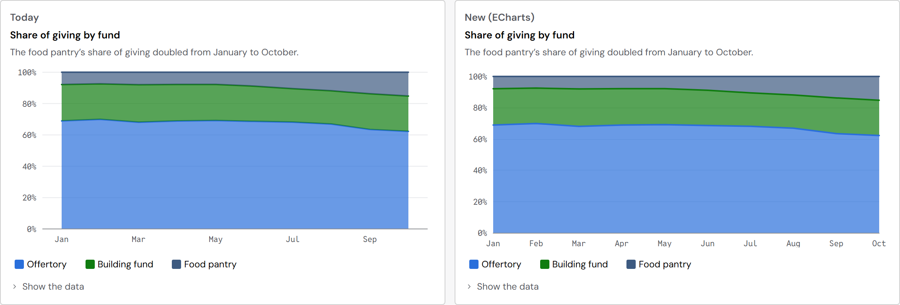
BarChart
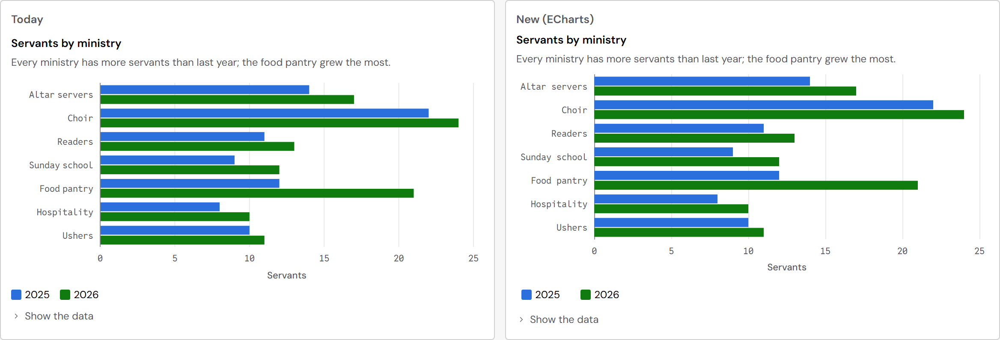
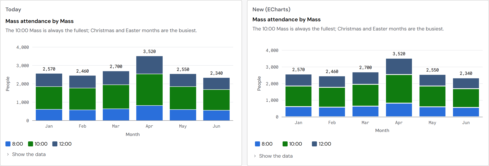
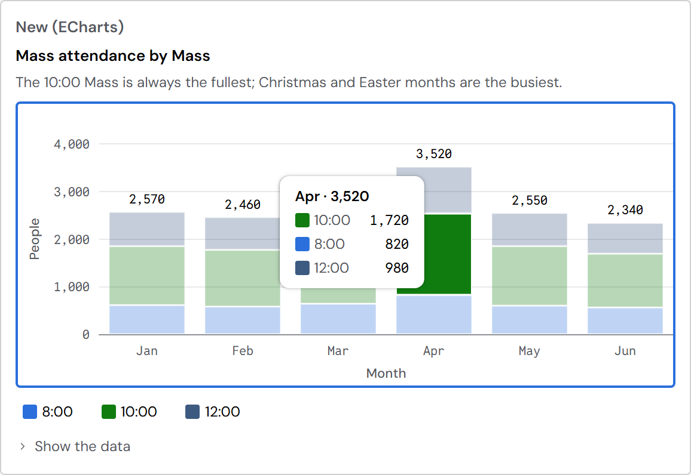
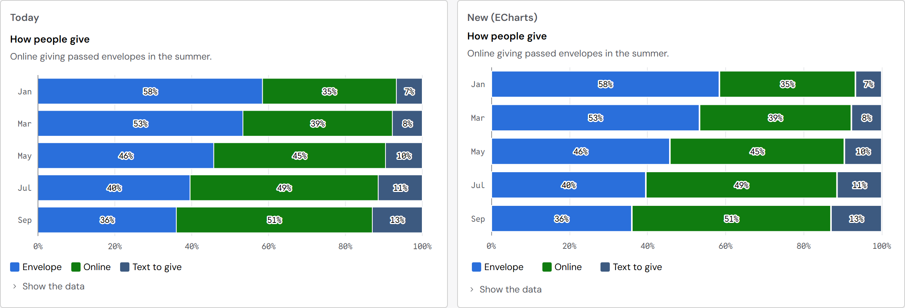
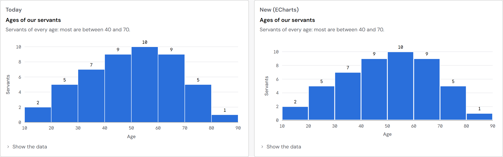
PieChart
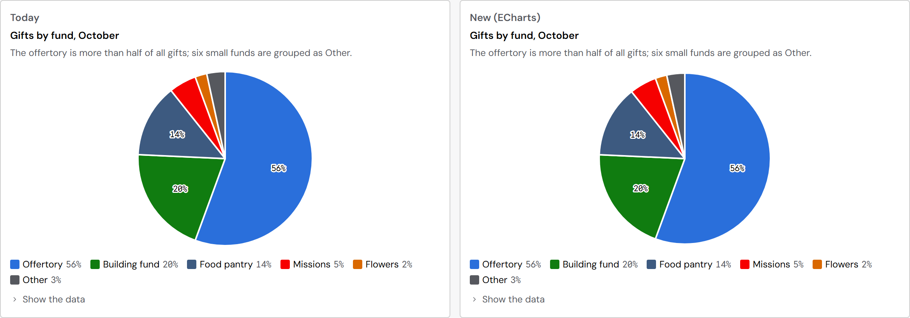
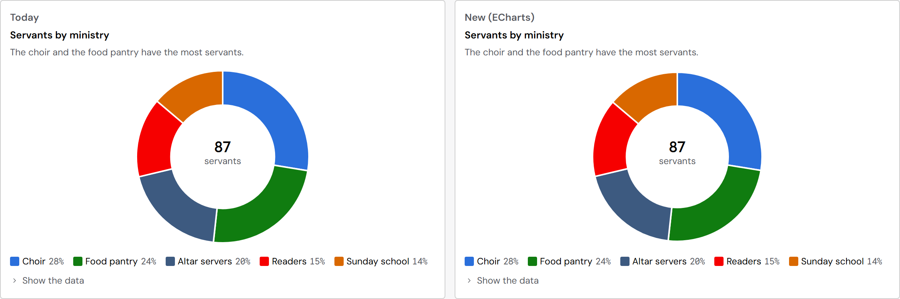
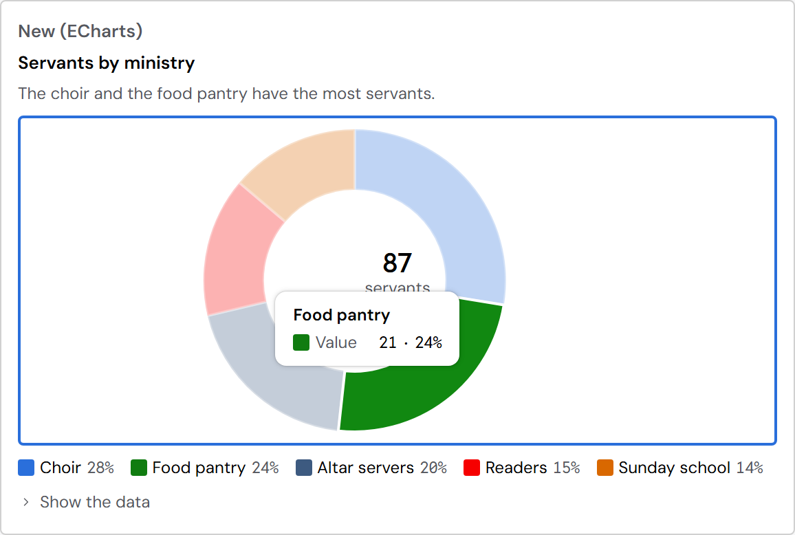
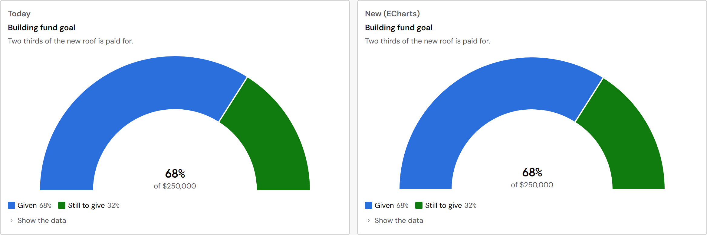
What changes for people
- Labels fit. ECharts makes room for every axis label, so amounts are never cut off, and each month or week is named when there is room.
- Bar and Pie work with the keyboard. One Tab stop, then the arrow keys move from bar to bar or slice to slice, and a screen reader hears each value. Today these two work with the pointer only. The donut in MetricCard gets this too.
- Bar's legend hides and shows series, as Line's and Area's already do.
- Lines start at the axis instead of half a step in, so the plot uses its full width.
- The engine loads with the first chart on a page (183 KB compressed, once). Until it arrives, a chart shows its title, legend and "Show the data"; pages without charts load nothing.
- Apps change nothing: every name and setting is the same. Codex's chart PRs are closed, as you said.
For you to decide
- Do LineChart, AreaChart, BarChart and PieChart each pass? Say which ones ship.
- Allow ECharts to write the sizes and fonts of its own drawing. Every value is a Plenix token, read where the chart is, but ECharts writes it onto its SVG elements: the plot's size in pixels and the label fonts. That is the same as the text editor's engine, which you allowed on 2026-10-14. The page checks would skip only the chart's drawing box (.plx-chart__engine); everything Plenix draws on top (tooltip, rings, labels, center value) stays under every rule. Recommended: yes. Without it, the charts can't ship on ECharts.
After your word ("ship it")
- Build the Platform, run the system and spec checks and the tests, and update the design spec's chart pages and the TypeScript declarations (PieChart's new interactive setting).
- Then the next charts, in the order you approved: ComboChart, WaterfallChart and the rest, each shown to you first.